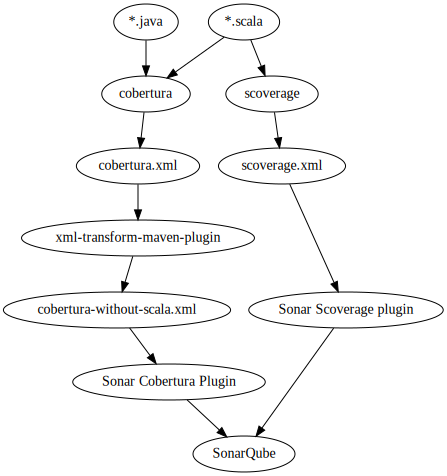

# Introducing Scala in your existing Java project
Tim Soethout - ING Bank
http://blog.timmybankers.nl
Note:
- Welcome!
# Overview
- Intro
- Scala @ ING - Context
- Compiling Scala in Maven
- Mixing Java and Scala source
- Code coverage
- Code quality using Sonar
- More code analysis
- Documentation for Java consumers
- Wrap up
Note:
- walk through items
- Expect lots of Demo's and working code!
# Scala @ ING

## State
- Much Java with Maven
- Some Scala for restful services using Akka
- Open source: Coral
- Developers are getting interested and looking for possibilities
Note:
- Coral is a realtime analytics framework build on Akka and Spark presented by Natalino Busa at an earlier meetup
## Context
- Maven project written in Java 6
- Team with mixed Scala experience levels
- Eager to do Scala
- But within Enterprise: Compliancy
Note:
- Enterprise and thus code quality, maintainability and other compliancy
- This was already in place for Java, but for Scala not yet
- To do this right, we needed some tools
- Tooling in place for Java, Scala tooling needs to get on par
- Let's see what we did
# Compiling Scala in Maven
## [scala-maven-plugin](http://davidb.github.io/scala-maven-plugin/usage.html)
```xml
<project>
<build>
<sourceDirectory>src/main/scala</sourceDirectory>
<testSourceDirectory>src/test/scala</testSourceDirectory>
<plugins>
<plugin>
<groupId>net.alchim31.maven</groupId>
<artifactId>scala-maven-plugin</artifactId>
<version>3.2.2</version>
...
</plugin>
</plugins>
</build>
</project>
```
Note:
- Most common way
- Works for most usecases, but you run into trouble when mixing sources
- Show this in next section
# Mixing Java and Scala source
## Demo
### Mixed Java & Scala
Note:
- Show
+ Source files for Java & Scala
+ Testcases - `@RunWith(classOf[JUnitRunner])`
+ IntelliJ test
+ `mvn test`
## Demo
### Multiple modules
Note:
- Show
+ Change branch to `multimodule`
+ Parent pom
+ individual poms
- Do `HelloWorld2.java`
+ add dependency from `module2` on `module1`
+ add `new module1.HelloWorld().hello()`
+ add `new module1.HelloScala().test()`
+ All works flawlessly because of module1 being compiled to `/target/` correctly
- Same for Scala to Java `HelloScala2.scala`
+ def test = new module1.HelloWorld().hello()
+ def someOther = new module1.HelloScala().test
- Now try inside module1: `HelloWorld.java`
+ `public String hello() { return new HelloScala().test();}
+ Fails because `maven-compiler-plugin` can't find Scala sources
+ Disabling `maven-compiler-plugin` solves the first part
+ Also need incremental compilation turned on to find
## Mixing it up
- Seems to work on first sight
- Problems can arise in:
+ Multiple modules
+ Dependencies from Java to Scala
- Depends on compile order
- sbt incremental compiler to the rescue
scala-maven-plugin:
```xml
<configuration>
<recompileMode>incremental</recompileMode>
</configuration>
```
Note:
- Know how to solve these problems to counter naysayers
- TODO: Maybe weird to mention this here? Example about java/scala incompatibility should go to single module part?
## [sbt-compiler-maven-plugin](https://code.google.com/p/sbt-compiler-maven-plugin/)
- Another option; runs sbt underneath
- Not really maintained anymore, but helped us a lot 6 months ago
```xml
<plugin>
<groupId>com.google.code.sbt-compiler-maven-plugin</groupId>
<artifactId>sbt-compiler-maven-plugin</artifactId>
<version>1.0.0-beta5</version>
<executions>
<execution>
<goals>
<goal>compile</goal>
<goal>testCompile</goal>
<goal>addScalaSources</goal>
</goals>
<id>default-sbt-compile</id>
</execution>
</executions>
</plugin>
```
Note:
- Try this is scala-maven-plugin does not work
- `<recompileMode>incremental</recompileMode>` seems the way to go now
# Code coverage
## Cobertura, Jacoco, Clover, EclEmma?!?
- Works good for Java
- Line and branch coverage
Note:
- Cobertura instruments byte code offline
- Jacoco agent for on-the-fly bytecode instrumentation
## Demo
### Let's try it for Scala!
Note:
- (branch `code-coverage`)
- `mvn clean cobertura:cobertura`
- Make everything big for viewers
- Try Jacoco
- `open module1/target/site/jacoco/index.html` - see bad coverage for Scala...
## That's awful!
- Scala compiler generates lots for you (i.e. in case classes, traits etc)
+ Cobertura and Jacoco work on byte code
+ ergo lots of uncovered generated code
+ I don't want to be testing generated code, would you?
Note:
- For us this meant code coverage statistic become nearly useless, since you can't see the difference between low coverage or tool screwups
- This is partly solvable by using [`jacoco-scala-maven-plugin`](http://timezra.blogspot.nl/2013/10/jacoco-and-scala.html), which filters the results
- Since Jacoco instruments on the fly, it sometimes has weird behaviour in Java coverage as well. We wanted 95%+ coverage, so every false negatives made our lives much harder.
## [scoverage-maven-plugin](https://github.com/scoverage/scoverage-maven-plugin) to the rescue!
- Scala statement and branch coverage!
Note:
- Statement coverage means granularity on coverage is not limited by full lines!
- Much better fit for Scala
## Demo
### Let's try it for Scala!
Note:
- branch `code-coverage-scoverage`
- `mvn scoverage:report`
- But case class not covered... Well that is ok, since it is all generated code, which should just work(tm)
- Optional: `new HelloScala().notCovered();` in Java test file - cover scala code from Java test case
- Hmmm... no Java Coverage...
## So what did we do?!
- Statement coverage for Scala with scoverage
- Normal line/branch coverage for Java with Cobertura
Note:
- Best of both worlds
- Next chapter on correct overall coverage numbers
# Code quality using Sonar
## [SonarQube](http://www.sonarqube.org)
- Code Quality Platform
- Code metrics
+ Coverage
+ Complexity
+ Size
+ Rules
- Spot regression
Note:
- Basic website with database with code statistics
- Update on build - locally and build server
## Tooling
- [scala-sonarqube-docker](https://github.com/TimSoethout/scala-sonarqube-docker)
+ `docker-compose` script with data container, Postgres database and SonarQube
+ Contains plugins needed for Scala! (Cobertura, scoverage, Java, etc)
- [sonar-scala-plugin](https://github.com/TimSoethout/sonar-scala/releases) - updated to use cobertura only for Java
- [`xml-transform-maven-plugin`](https://github.com/TimSoethout/transform-xml-maven-plugin)
+ Used for filtering Scala coverage from `cobertura.xml`
Note:
- docker-compose is a way to easily define groups of docker containers that should work together
- Show plugins installed in Sonar: http://172.16.164.130:9000/updatecenter
+ scalastyle checks code style/quality
+ checkstyle for java+
+ ...
+ Scala plugin - patched version enabling Java/Scala mixing
- There are xslt-transformation plugins available, but they require xslt file in resources on every project
- Explain use for transformation plugin next slide
Demo
Java & Scala code coverage in Sonar

# More code analysis
## Compiler flags Java
- `-Xlint:unchecked` - Unchecked casts
Note:
- TODO lookup comments on these
## Compiler flags Scala
- `-unchecked`
- `-deprecation`
- `-feature`
- `-Xlint`
- `-Yno-adapted-args`
- `-Ywarn-dead-code`
- `-Ywarn-numeric-widen`
- `-Ywarn-value-discard`
- `-Xfuture`
- `-Ywarn-unused-import`
- `-Ywarn-unused`
Note:
- gives warnings
- `-unchecked` - checks unchecked casts and erasure!
- `-deprecation` - warn deprecated APIs
- `-feature` - explicitly enable advanced features: dynamics, higher kinds, existential types etc
- `-Xlint` - Enable recommended additional warnings
- `-Yno-adapted-args` - repl: `List(1,2,3).toSet()` - returns false, wtf?! - `scala -Yno-adapted-args`
- `-Ywarn-dead-code` - warns about dead code
- `-Ywarn-numeric-widen` - Warn when numerics are widened. Can happen when implicits are involved
- `-Ywarn-value-discard` - Warn when non-Unit expression results are unused
- `-Xfuture` - make feature behave like next major version, this catches breaking changes early
- `-Ywarn-unused-import` - warns on unused imports
- `-Ywarn-unused` - Warn when local and private vals, vars, defs, and types are are unused
- And much more, check man page for scalac.
## Demo
### Compiler flags
### FindBugs & FindSecurityBugs
Note:
- Show unused import.. add to Scala source file and compile
## More checks - To implement
- [Abide](https://github.com/scala/scala-abide)
- [Wartremover](https://github.com/puffnfresh/wartremover)
Note:
- As you see I love to be able to depend on tooling to catch my mistakes.
- Wartremover & Abide (Julian Dragos, maintainer will give talk after me): lint tool, which can be used to define rules for your code
- All of them can be added as Scala compiler plugins
# Documentation for Java consumers
## [genjavadoc](https://github.com/typesafehub/genjavadoc)
- Generated outline of Scala files in java
- including javadoc annotations
- useful to generate Javadoc for Java consumers
## Demo
### genjavadoc
Note:
- `open module1/target/apidocs/index.html`
# Wrap up
## Recap
- Scala and Java code in
+ single module
+ multiple modules
+ code coverage on both
- Code Quality with
+ SonarQube
+ ScalaStyle
+ FindBugs
- Lots to tweak - compiler arguments, linters
- Documentation for Java
Note:
- I gave you an overview of how we use it, and hopefully this is also useful for you.
- It's all on github, so feel free to use it!
## Thanks for listening
Questions?
[Slides](http://blog.timmybankers.nl/scala-java-maven-slides)
/
[Code](https://github.com/TimSoethout/scala-java-maven-code)